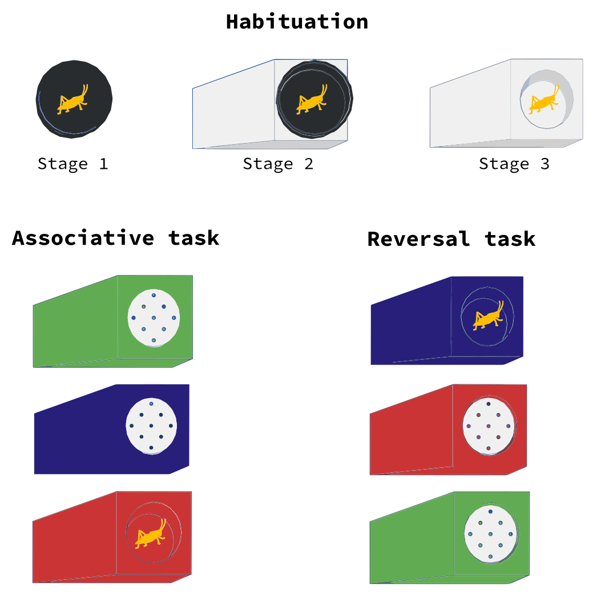
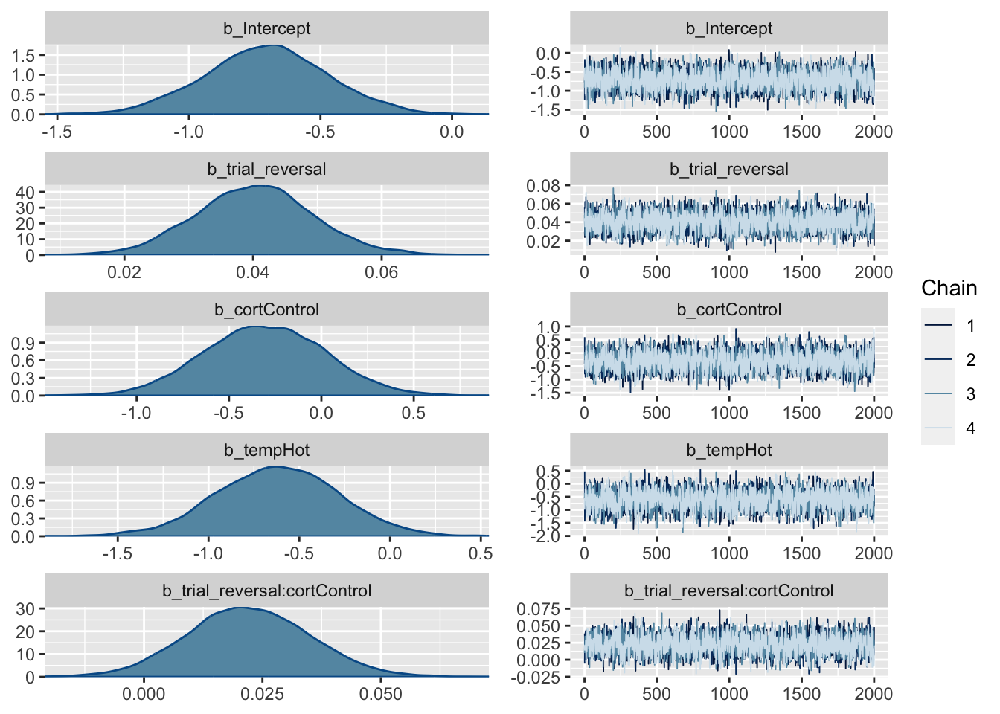
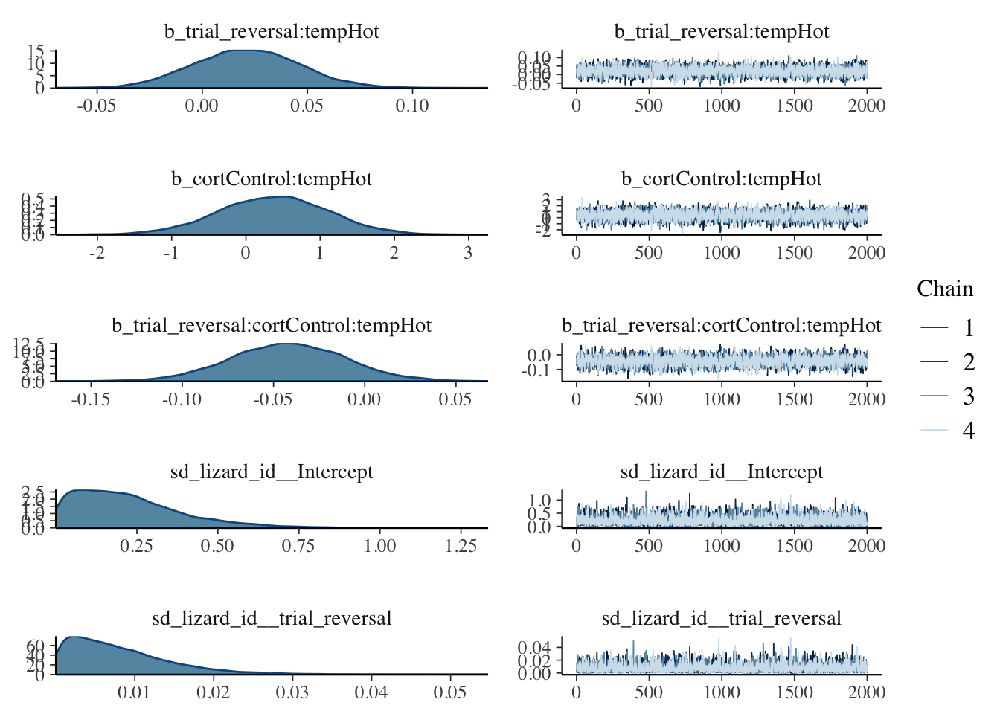
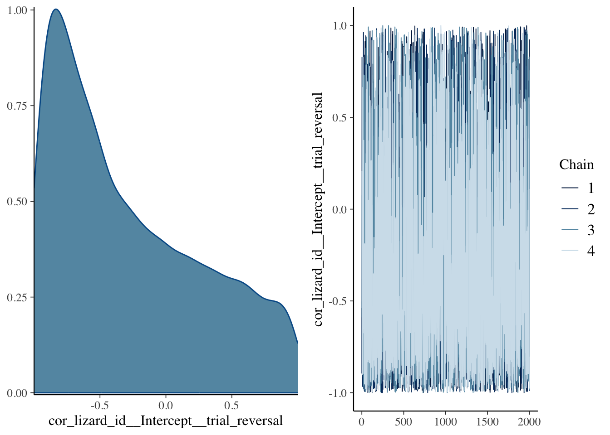
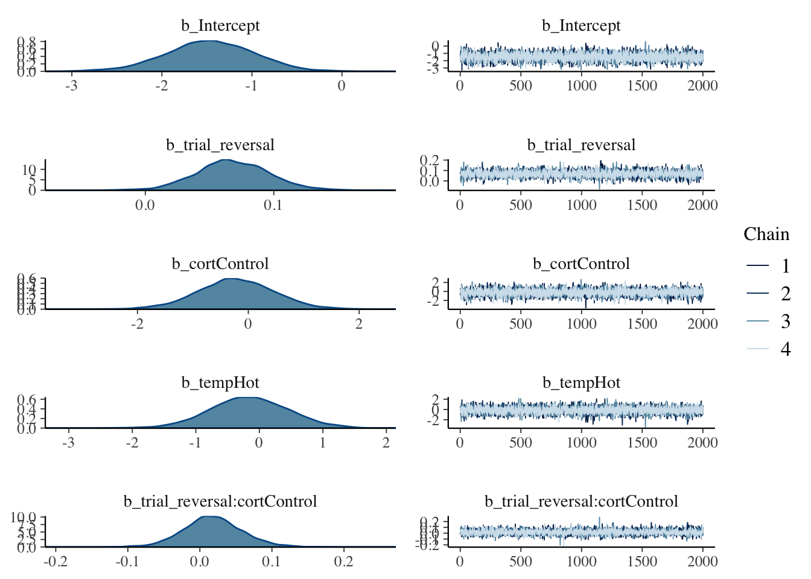
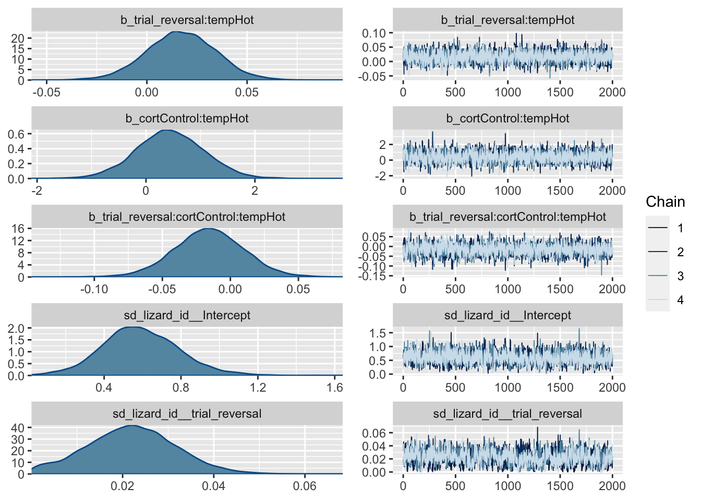
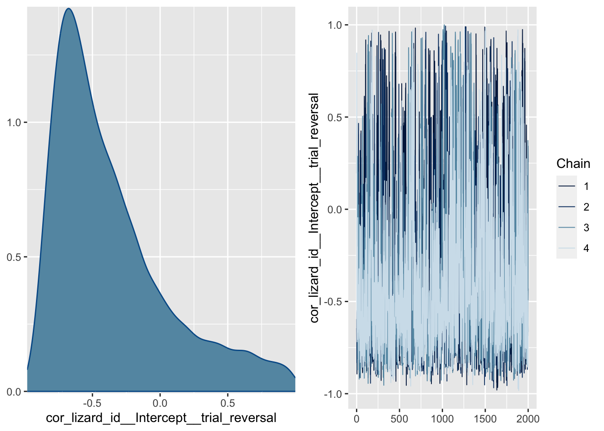

Early environmental conditions do not impact behavioural flexibility in an invasive and non-invasive lizard species
Introduction
Behavioural flexibility describes the ability of individuals to adjust behaviour adaptively in response to internal or external changes in the environment [@brown2010behavioral]. It comprises a suite of behaviours, including problem-solving and innovation [@brown2010behavioral], that are predicted to be crucial for invasion success [@wright2010behavioral; @chapple2012can; @szabo2020can]. Species with greater behavioural flexibility are expected to be more likely to survive and establish in new habitats because behaving flexibly enhances their capacity to exploit new resources and face new challenges [@wright2010behavioral; @chapple2012can; @szabo2020can]. For instance, in closely related bird species successful invaders show a higher frequency of foraging innovations [@sol2000behavioural]. According to the ‘adaptive flexibility hypothesis’, behavioural flexibility is most relevant during introduction, establishment, and the spread of an invasive population [@wright2010behavioral; @chapple2012can; @szabo2020can]. In mammals, birds, reptiles and amphibians, relative brain size has been shown to be a good predictor of behavioural flexibility and invasive success [@sol2000behavioural; @sol2002behavioural; @sol2008brain; @amiel_smart_2011]. However, the brain is also sensitive to environmental changes during the early stages of development [@zhu_prenatal_2004] creating uncertainty about how environmental insults faced by early invaders might impact behavioural flexibility and thus the probability of invasion success.
New environments faced by invasive populations introduce organisms to a plethora of unfamiliar, and potentially stressful, situatons. Sensory systems detect and transmit environmental signals to instigate adaptive physiological and behavioural adjustments – responses that are mediated by glucocorticoids (GCs) [@sapolsky_how_2000]. Glucocorticoids can be transmitted to offspring and influence their phenotype and development through transgenerational effects [@Crino_2023]. In addition to novel enviroments experienced by parents, offspring also experience potentially stressful environmental conditions that can interact with or amplify parental effects. Temperature, in particular, is likely to deviate in invasive populations compared to source populations having a direct effect on offspring phenotype with long-lasting consequences [@noble_developmental_2018]. As such, GCs and temperature are predicted to interact to influence the offspring phenotype with particuarly potent effects on brain development [@jonson1976effect; @coomber_independent_1997; @zhu_prenatal_2004; @amiel_effects_2017] and cognition [@clark_colour_2014; @lui2017chronic]. While the importance of behavioural flexibility is recognised as being important for invasion success, we know little about how novel environmental stressors, such as GCs and temperature, impact behavioural flexibility. Such knowledge is crucial for understanding the potential for invasive populations to adapt to new environments and the potential for invasion success.
Here, we studied the effects of prenatal temperature and the glucocorticoid, corticosterone (CORT) (the main GC in reptiles) [@Crino_2023], on behavioural flexibility in two species with distinct histories of invasion success, the delicate skink (Lampropholis delicata) and the common garden skink (L. guichenoti). L. delicata has been succesful in colonising different areas around the globe [@baker1979rainbow; @chapple2013divergent; @chapple2015deliinvLHI], but the same is not true of L. guichenoti despite the two species having similar life-histories and overlapping distributions [@chapple_know_2011; @chapple_biology_2014]. Personality has been shown to be different between these two species [@chapple_know_2011; @chapple2012can; @bezzina2014does], which could be related to general cognitive differences that are important for invasion success. Additionally, early environments are known to affect suites of morphological and behavioural traits differently in each species [@carrasco2023maternal; @kar2023heritability], but the interactive role of maternal CORT and early temperatures have not yet been explored. Differences in the relative impact that early environments have on behavioural flexibility may help explain differing invasion success between the two species. We predicted that L. delicata would, on average, perform more proficiently in the task compared to L. guichenoti. We also anticipated prenatal CORT and temperature to affect the behavioural flexibility of both species, and that L. guichenoti would be more impacted by the prenatal environment than L. delicata.
Methods
Manipulating Early Thermal and CORT Environments
To manipulate early thermal environment and CORT, we collected eggs of L. delicata and L. guichenoti from a lab breeding colony that was established from a Sydney population in 2019. The Sydney population is thought to be the source population for invasive populations established on Lord Howe Island [@chapple2016origin]. Eggs were topically supplied with 5µL of CORT dissolved in 100% Ethanol (CORT treatment) or the same volume of the vehicle (Control) and were then incubated at different temperatures (Cold – 23ºC ± 3ºC or Hot – 30ºC ± 3ºC) until hatching in a fully factorial design. For full details of breeding colony and husbandry see Supplementary Material.
Quantifying Behavioural Flexibility
Briefly, the learning test was divided in three main phases: a habituation phase where lizards had to learn to eat a frozen-thawed cricket from white 3D-printed polylactic acid (PLA) ramps (9 L x 4 W x 5 H cm). The habituation phase lasted 38 days. This was followed by a colour association task where lizards had to associate the food reward with one of two colours (red or blue) (Fig. 1 Associative task). The associative learning task lasted 35 days. Finally, to quantify behavioural flexibility, we reversed the previously trained colour (red or blue) so that they needed to learn to associate the food with the opposite colour (Fig. 1 Reversal task). The reversal learning task lasted a total of 40 days. Lizards were tested once daily between 11 to 12 am when they were most active.
In associative and reversal tasks we used three different ramps that were identical in size and shape to the ones for the habituation phase. The colours of the ramps were green, red, and blue, as previous studies demonstrate that squamates can discriminate between these colours [@Baden_Osorio_2019_Vert_vision]. To avoid the influence of chemical cues, we placed the food reward in all three ramps, but in two of them the cricket was covered by immovable small lids with holes on the top. To control for potential colour biases, we assigned one group of lizards within each treatment to associate food in the blue ramp followed by the red ramp in the reversal, while in the other group the order was reversed. In all trials, the position of the feeders was changed randomly to ensure subjects were using colour rather than spatial cues for the association.
We recorded whether the animal chose the correct ramp first or not. We considered that a choice was made if the head of the lizard was inside the well of one of the ramps. We considered a trial failed if there was no choice in one hour of recording and those trials. Here, we analysed the data of the reversal task as a measure of behavioural flexibility [@brown2010behavioral].

Statistical analyses
We performed the analyses for each species separately. We fitted two different Bayesian multilevel models using the brm function from the brms package [@burkner2017brms] using in R extension (version 2.8.2) [@R]. We ran four parallel MCMC chains of 3000 iterations for each model, with a warmup period of 1000 iterations. We modelled correct choices [correct (1) or not (0)] as the response variable, and trial, hormone (CORT versus Control), incubation temperature (Cold versus Hot), and their interaction as fixed factors. We included a random intercept and slope (trial) for each lizard in our models. We used the posterior distributions of parameters from these models to test for differences in learning rate between treatments and species. Learning slopes were obtained using the ‘trial’ estimates and its interaction with hormone and temperature treatments. Slope estimates greater than zero were considered as evidence of learning, while those less or equal to zero were not. We calculated the probability that slopes or contrasts between slopes differed from zero (pmcmc) using the posterior distributions. We considered statistical significance if pmcmc < 0.05.
Results
Originally, we started with 96 lizards, 48 per species and 12 per treatment per species. However, our final sample size was 81 due to natural mortality (n = 11), failure to complete the training stage (n = 1), or if the number of failed tasks (see above) was higher than 15 (n = 3). Final sample sizes per treatment and species are listed in Table 1.
Both species learnt across all treatments (Fig. 2 B, D), but we did not find any difference between treatments or species in the rate of learning. For L. delicata, hormone treatment (Control - CORT = -0.043, pmcmc = 0.859), incubation temperature (Hot - Cold = -0.001, pmcmc = 0.990), or the interaction ([(Control-Hot - CORT-Hot) - (Control-Cold - CORT-Cold)] = -0.034, pmcmc = 0.990) did not affect learning (see Fig. 2 A, B). We similarly found no significant effects of hormone (Control - CORT = 0.005, pmcmc = 0.812), incubation temperature (Hot - Cold = 0.009, pmcmc = 0.628), or the interaction ([(Control-Hot - CORT-Hot) - (Control-Cold - CORT-Cold)] = -0.016, pmcmc < 0.001) on learning in L. guichenoti (see Fig. 2 C, D). (Control-Hot - CORT-Hot = -0.003; pmcmc = 0.861) or (Control-Cold - CORT-Cold = 0.013; pmcmc = 0.484)

Finally, when all individuals from all the treatments were pooled together and species were compared, there were not significant differences in the estimated slopes (Mean learning slope L. delicata = 0.051, 95% CI = [0.027, 0.076]; Mean learning slope L. guichenoti = 0.059, 95% CI = [0.031, 0.089]; L. delicata - L. guichenoti = -0.008, pmcmc = 0.628).
Discussion
The study embarked on unravelling the interactive effects of prenatal temperature and GCs on behavioural flexibility in two closely related species, the delicate skink (Lampropholis delicata) and the common garden skink (L. guichenoti). Despite sharing life history traits, only L. delicata has proven successful in colonising various global regions, and we hypothesised this may be related to higher behavioural flexibility. Furthermore, we expected behavioural flexibility in this species to be less susceptible to the effect of early environment since this trait can be adaptive in several stages of invasion involving more than one generation. Nevertheless, we did not find significant differences between treatments or species when we compared their performance in a reversal task. We found that, on average, all the lizards from the four treatments and the two species learned the reversal task - indicated by estimated slopes that are significantly different from zero - and that they learn, on average, at the same rate. Furthermore, these results were consistent when only those individuals that performed better in the previous associative task were included (see Supplementary material).
Previous studies have shown that L. delicata more readily explores novel environments than L. guichenoti, which can be advantageous during colonisation [@chapple_know_2011]. However, Bezzina et al. [@bezzina2014does] found no differences in learning between the two skinks in an associative learning task. Our results align with the latter study and suggest that behavioural flexibility does not differ between these species. In addition, we did not find any effect of the treatments on either species. Both results contrast our original predictions and may indicate that other aspects of their biology are more relevant for L. delicata’s success as invaders than behavioural flexibility. For instance, the mentioned differences in exploratory behaviour can be the key factor explaining why L. delicata and not L. guichenoti is better at colonising new areas, since exploring more can also enhance the ability to effectively locate novel resources in L. delicata [@chapple_know_2011].
Our early environment manipulation did not affect the lizards’ performance in the task. We predicted that prenatal CORT treatment would decrease reversal learning abilities and that high temperatures would minimise these effects. However, our results show no significant differences between treatments in both species. Our outcome contrasts with previous studies that show impairments of high GCs levels in different types of learning tests [@lemaire_prenatal_2000; @zhu_prenatal_2004; @farrell_developmental_2016], but they are consistent with other experiments where GCs increased or did not impact learning abilities [@szuran_water_1994; @bebus_associative_2016]. More striking is the absence of an effect of incubation temperature since most of the studies in reptiles reported better performance when incubated at higher temperatures in different associative learning and motor tasks [@amiel_hotter_2012; @amiel_egg_2014; @clark_colour_2014]. Furthermore, those studies that reported cold-incubated lizards learn faster [@dayananda_incubation_2017; @abayarathna_effects_2020] used incubation temperatures far beyond the natural range in the hot treatment. In some systems, exposure to CORT during development has hormetic effects on learning and neural structures [@du_dynamic_2009; @mcewen_brain_2012]. For example, in Sprague–Dawley rats, exposure to high doses of CORT, but not low doses, reduced density of immature neurons and cell proliferation and in the dentate gyrus [@DOSEneurobrummelte2010chronic]. We know that prenatal CORT treatment affects other traits in both species of lizards used in this experiment (unpublished data). However, it is possible that prenatal CORT treatment affects tissues differently. Conversely, it is likely that the effects of the early environment may vary depending on the cognitive task, as evidenced by studies showing variations in the impact of prenatal GCs and temperature on different brain regions [@coomber_independent_1997; @sakata_neural_2000; @lemaire_prenatal_2000]. These hypotheses are not mutually exclusive and could be tested in future experiments using multiple doses of prenatal CORT treatment, assessing learning using multiple cognitive tasks, and by measuring the neurophysiological effects on different brain nuclei.
In conclusion, our results indicate that lizards performed the reversal learning task, a measure of behavioural flexibility, at similar rates, with no discernible differences between treatments or species. These findings contrast our initial predictions and suggest that other aspects of L. delicata biology may be more influential for their success as invaders than behavioural flexibility alone. The present study also indicates that prenatal CORT and temperature do not affect learning abilities in these species. Nevertheless, it remains possible that the effects of the early environment are task-dependent, and future studies should explore performance across different cognitive tasks and the effects of both treatments on brain function.
References
Suplementary Material
Methods details
Husbandry
Breeding colony – We tested juveniles originating from a breeding colony established in the lab since 2019. There is a total of 270 and 180 adults of L. delicata and L. guichenoti respectively, housed in big containers (41.5 L x 30.5 W x 21 H cm) with six lizards (2 males and 4 females) per enclosure. Enclosures are provided with non-stick matting, shelter, and several small water dishes. Water is given daily, and they are fed approx. 40 mid-size crickets (Acheta domestica) per enclosure three days a week. Crickets are dusted with calcium weekly and multivitamin and calcium biweekly. To ensure a temperature gradient, we employ a heat chord and a heat lamp following a 12 h light:12 h dark cycle. Room temperatures are set to 22-24 Celsius, and warm side of enclosures is usually at 32 Celsius.
Eggs collection and incubation – Between mid-October 2022 to the end of February 2023, we provided females with a place to lay the eggs by means of small boxes (12.5 L x 8.3 W x 5 H cm) with moist vermiculite inside, that were placed in one extreme of the communal enclosures (see above). We checked for the presence of eggs in the boxes three days a week. After collection, we measured length and width of eggs with a digital caliper to the nearest 0.1 mm and weighed them with a (OHAUS, Model spx123) digital scale ± 0.001g error. Then eggs were treated with CORT or vehicle (see CORT and Temperature manipulation below) and were placed in individual cups (80 mL) with moist vermiculite (12 parts water to 4 parts vermiculite). The cups were covered with cling wrap to retain moisture and left in LATWIT 2X5D-R1160 incubators at two different temperatures (see CORT and Temperature manipulation below) until hatching.
Hatchlings – Eggs in the incubator were checked three times a week for hatchlings. After hatchling, we measured juveniles’ SVL and Tail Length (TL) with a ruler to the nearest mm and weighed them with a (OHAUS, Model spx123) digital scale ± 0.001g error. We then placed hatchlings in individual enclosures (18.7L x 13.2W x 6.3H cm) and provided them with non-stick matting and a small water dish. During this period, they were sprayed water every day and received 3-6 small A. domestica crickets three times a week. All care otherwise follows similar protocols to adults (see above).
Two weeks before we started the training phase (see below), lizards were moved to the experimental arena for acclimatation. The arenas were individual medium size (41 L x 29.7 W x 22 H cm) plastic containers with a shelter (9 L x 6 W x 1.5 H cm) on one of the extremes and a water dish on the other. These new enclosures were placed in two rooms in 7 different racks associated to 7 different CCTV systems (device model DVR-HP210475) that allowed us to record their behaviour during the experiment (see details below). The number of lizards per species and treatment in each rack was counterbalanced to control for any effect of the room or the position of the lizard in the rack. During acclimatation and throughout the experiment, lizards were fed with only one cricket per day dusted with calcium and multivitamin (see protocol below), and water was supplied ad libitum. We provided a temperature gradient by means of a heat cord and heat lamps in a 12 h light: 12 h dark cycle. The temperature of both rooms was set to between 22-24 Celsius.
CORT and Temperature manipulation
To test empirically the effect of early environment we manipulated CORT concentration in eggs and incubated them under one of two temperature regimes (Cold – 23ºC ± 3ºC or Hot – 30ºC ± 3ºC) in a 2x2 factorial design (Fig. 1 A). We first allocated eggs to one of two different treatments: CORT treatment, where eggs were topically supplied with 5µL of CORT dissolved in 100% Ethanol (vehicle) at a final (10 pg CORT/mL) concentration (CORT treatment); and a Control treatment, where eggs received an equal volume of the vehicle. CORT concentration employed in the CORT treatment represents 2 standard deviations above the mean natural concentration obtained in eggs from both species (non-published data). Then, eggs were incubated in one of the two previously mentioned temperature regimes (Cold or Hot) until hatching. The number of eggs per clutch assigned to each hormone and temperature treatment were counterbalanced in both species.
Learning task
The habituation phase was divided into three stages: in the first stage, the reward, a small, frozen cricket (A. domestica) was placed in an opaque petri dish (3D x 1.6H cm) (Fig. 1 B, Stage 1); in the second stage, the petri dish with the cricket was placed on top of the white 3D printed ramps (Fig. 1 B, Stage 2); and in the third stage, the cricket was left inside a well (3D x 1.75H cm) on top of the ramp (Fig. Fig. 1 B, Stage 3). Trials in every stage lasted one hour, begining when the feeding block (petri dish, ramp, or both) was placed inside the enclosure and finished when we took the feeding block away. We recorded whether the cricket had been consumed or not and we considered a stage as completed if the lizards ate the crickets in at least 5 out of 6 trials. This phase lasted 38 days, and only in one case we decided not to use the lizard in the next phases because its behaviour was not consistent.
In the associative phase, we used three ramps that were identical in shape and size but differ in the colour (Associative task in Fig. Fig. 1 B). As in the last stage of the habituation phase, we placed the cricket inside the wells of the ramps, but then two of them were covered with 3D-printed lids (3D x 0.5H cm) so prey was only accessible in “the correct” ramp. The food reward was placed in all three wells to avoid lizards using prey chemical cues, that were released in the closed wells through a series of small holes on the top of the lids. The colours of the feeders were green, red, and blue, as previous studies demonstrate that squamates can discriminate between these colours [@Baden_Osorio_2019_Vert_vision]. However, we decided to split the lizards in two groups to control for potential colour preference that could bias our results. One group of lizards was assigned the blue ramp as the correct choice (i.e., the ramp with the non-covered frozen cricket) in the associative task and the red ramp in the reversal, while the other group was assigned red as correct for the associative and blue for the reversal. In all trials, the position of the feeders was changed randomly to ensure subjects were using colour rather than spatial cues for the association. Lizards were tested in this task once a day for 35 days. After the colour association phase, we performed a choice reversal task (Reversal task in Fig. 1 B). Here, the attainability of prey was indicated by a different colour from the reversal, requiring the lizards to form a novel association between the new colour and the food reward. This test was done once a day for 40 days.
We performed the full experiment between the 6th of March until the 26th of June 2023, between 11 to 12 am, when the lizards were active. Trials in the learning phases (colour associative task and reversal tasks) were recorded with different CCTV systems always using the same camera per individual. Videos were analysed manually using a standard video player (IINA) by PR, who recorded whether the first choice made by each subject was the correct feeder or not. We considered a choice was made if the head of the lizard was inside the well of one of the ramps. We considered a trial failed if there was no choice in one hour of recording and those trials were considered as ‘non data’ in the analyses. We excluded from our analyses those individuals with more than 15 trials failed (i.e. they did not make a choice), and we considered the first trial to be the first one where the individual made a choice. We also considered individuals to be reinforced if the cricket was eaten after the test independently of whether their initial choice was correct or not.
Checking the models plots
Model formula for the reversal task is:
Choice ~ trial_reversalcorttemp + (1 + trial_reversal|lizard_id)
Plots for the different models of the associative task:
1.- L. delicata
Estimate Est.Error Q2.5 Q97.5
R2 0.1033704 0.01259748 0.07857037 0.1286278


2.- L. guichenoti
Estimate Est.Error Q2.5 Q97.5
R2 0.1456256 0.01556628 0.1149344 0.1757993


Slopes estimates per treatment and species for the original database
Specie | Treatment | Mean | 95% CI | pmcmc |
|---|---|---|---|---|
L. delicata | CORT-Cold (n = 11) | 0.040 | 0.023 , 0.059 | < 0.001 |
N = 47 | Control-Cold (n = 12) | 0.062 | 0.045 , 0.081 | < 0.001 |
Obs = 1880 | CORT-Hot (n = 12) | 0.057 | 0.039 , 0.075 | < 0.001 |
Control-Hot (n = 12) | 0.045 | 0.027 , 0.063 | < 0.001 | |
L. guichenoti | CORT-Cold (n = 10) | 0.048 | 0.026 , 0.073 | < 0.001 |
N = 37 | Control-Cold (n = 7) | 0.061 | 0.032 , 0.093 | < 0.001 |
Obs = 1480 | CORT-Hot (n = 10) | 0.065 | 0.040 , 0.090 | < 0.001 |
Control-Hot (n = 10) | 0.062 | 0.038 , 0.089 | < 0.001 |
Slopes estimates per treatment and species employing only those individuals that passed a learning criterion of 80% correct choices in the last 10 trials of the associative task
Specie | Treatment | Mean | 95% CI | pmcmc |
|---|---|---|---|---|
L. delicata | CORT-Cold (n = 4) | 0.052 | 0.022 , 0.085 | < 0.05 |
N = 19 | Control-Cold (n = 5) | 0.066 | 0.038 , 0.095 | < 0.001 |
Obs = 760 | CORT-Hot (n = 3) | 0.073 | 0.037 , 0.112 | < 0.001 |
Control-Hot (n = 7) | 0.045 | 0.022 , 0.069 | < 0.001 | |
L. guichenoti | CORT-Cold (n = 3) | 0.068 | 0.013 , 0.125 | < 0.05 |
N = 18 | Control-Cold (n = 3) | 0.086 | 0.030 , 0.147 | < 0.05 |
Obs = 720 | CORT-Hot (n = 5) | 0.072 | 0.030 , 0.115 | < 0.05 |
Control-Hot (n = 7) | 0.066 | 0.030 , 0.105 | < 0.001 |